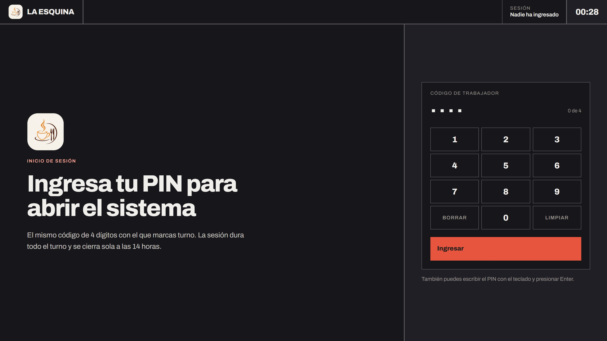

16:52
Se abre la caja
Se entra con el mismo PIN de cuatro dígitos con el que se marca turno. No hay roles: cualquiera puede hacer todo. Lo que el sistema distingue son dispositivos (la laptop de caja y el celular del salón), no personas.
La sesión dura el turno y se cierra sola a las 14 horas.
